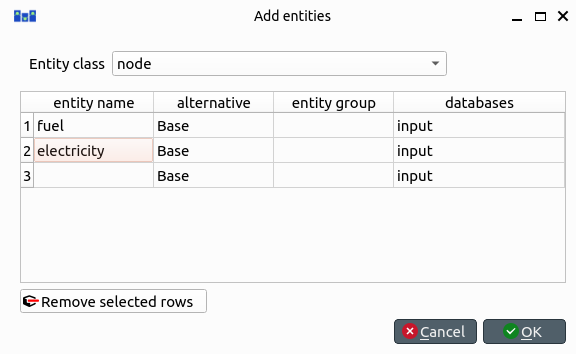
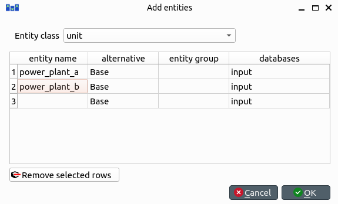
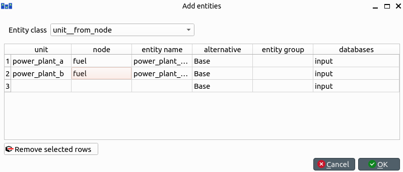
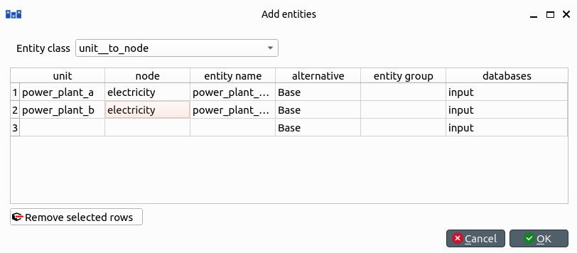
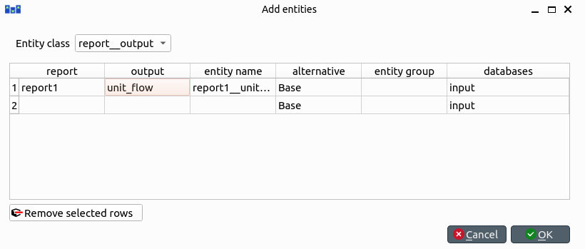
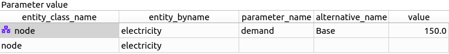
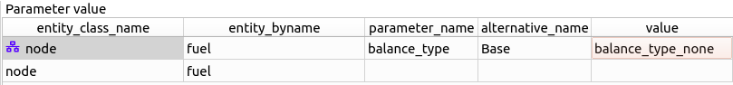
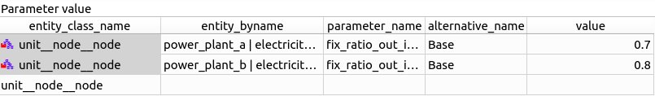

Simple System tutorial
Welcome to Spine Toolbox's Simple System tutorial.
This tutorial provides a step-by-step guide to setup a simple energy system on Spine Toolbox.
Introduction
Model assumptions
- Two power plants take fuel from a source node and release electricity to another node in order to supply a demand.
- Power plant 'a' has a capacity of 100 MWh, a variable operating cost of 25 euro/fuel unit, and generates 0.7 MWh of electricity per unit of fuel.
- Power plant 'b' has a capacity of 200 MWh, a variable operating cost of 50 euro/fuel unit, and generates 0.8 MWh of electricity per unit of fuel.
- The demand at the electricity node is 150 MWh.
- The fuel node is able to provide infinite energy.

Installation and upgrades
If you haven't yet installed the tools yet, please follow the installation guides:
- For Spine Toolbox: Spine Toolbox installation guide
- For SpineOpt: SpineOpt installation guide
If you are not sure whether you have the latest version, please upgrade to ensure compatibility with this guide.
For Spine Toolbox:
- If installed with pipx, then use
python -m pipx upgrade spinetoolbox - If installed from sources using git, then
git pull,python -m pip install -U -r requirements.txt
- If installed with pipx, then use
For SpineOpt: SpineOpt upgrade guide
Guide
Entering input data
Importing the SpineOpt database template
Download the SpineOpt database template and the basic SpineOpt model (right click on the links, then select Save link as...)
Select the 'input' Data Store item in the Design View.
Go to Data Store Properties and hit Open editor. This will open the newly created database in the Spine DB editor, looking similar to this:

The Spine DB editor is a dedicated interface within Spine Toolbox for visualizing and managing Spine databases.
Press Alt + F to display the main menu, select File -> Import..., and then select the template file you previously downloaded (spineopt_template.json). The contents of that file will be imported into the current database, and you should then see classes like 'commodity', 'connection' and 'model' under the root node in the Object tree (on the left). Then import the second file (basic_model_template.json).
From the main menu, select Session -> Commit. Enter 'Import SpineOpt template' as message in the popup dialog, and click Commit.
The SpineOpt basic template contains (i) the fundamental entity classes and parameter definitions that SpineOpt recognizes and expects; and (ii) some predefined entities for a common deterministic model with a 'flat' temporal structure.
Creating objects
Always in the Spine DB editor, locate the Object tree (typically at the top-left). Expand the [root] element if not expanded.
Right click on the [node] class, and select Add objects from the context menu. The Add objects dialog will pop up.
Enter the names for the system nodes as seen in the image below, then press Ok. This will create two objects of class node, called fuel_node and electricity_node.

- Right click on the unit class, and select Add objects from the context menu. The Add objects dialog will pop up.
In SpineOpt, nodes are points where an energy balance takes place, whereas units are energy conversion devices that can take energy from nodes, and release energy to nodes.
- Enter the names for the system units as seen in the image below, then press Ok. This will create two objects of class unit, called power_plant_a and power_plant_b.

To modify an object after you enter it, right click on it and select Edit... from the context menu.
Establishing relationships
Always in the Spine DB editor, locate the Relationship tree (typically at the bottom-left). Expand the root element if not expanded.
Right click on the unit__from_node class, and select Add relationships from the context menu. The Add relationships dialog will pop up.
Select the names of the two units and their sending nodes, as seen in the image below; then press Ok. This will establish that both power_plant_a and power_plant_b take energy from the fuel_node.

Right click on the unit__to_node class, and select Add relationships from the context menu. The Add relationships dialog will pop up.
Select the names of the two units and their receiving nodes, as seen in the image below; then press Ok. This will establish that both power_plant_a and power_plant_b release energy into the electricity_node.

Right click on the report__output class, and select Add relationships from the context menu. The Add relationships dialog will pop up.
Enter report1 under report, and unit_flow under output, as seen in the image below; then press Ok. This will tell SpineOpt to write the value of the unit_flow optimization variable to the output database, as part of report1.

In SpineOpt, outputs represent optimization variables that can be written to the output database as part of a report.
Specifying object parameter values
Back to Object tree, expand the node class and select electricity_node.
Locate the Object parameter table (typically at the top-center).
In the Object parameter table (typically at the top-center), select the demand parameter and the Base alternative, and enter the value 100 as seen in the image below. This will establish that there's a demand of '100' at the electricity node.

Select fuel_node in the Object tree.
In the Object parameter table, select the balance_type parameter and the Base alternative, and enter the value balance_type_none as seen in the image below. This will establish that the fuel node is not balanced, and thus provide as much fuel as needed.

Specifying relationship parameter values
In Relationship tree, expand the unit__from_node class and select power_plant_a | fuel_node.
In the Relationship parameter table (typically at the bottom-center), select the vom_cost parameter and the Base alternative, and enter the value 25 as seen in the image below. This will set the operating cost for power_plant_a.

Select power_plant_b | fuel_node in the Relationship tree.
In the Relationship parameter table, select the vom_cost parameter and the Base alternative, and enter the value 50 as seen in the image below. This will set the operating cost for power_plant_b.

In Relationship tree, expand the unit__to_node class and select power_plant_a | electricity_node.
In the Relationship parameter table, select the unit_capacity parameter and the Base alternative, and enter the value 100 as seen in the image below. This will set the capacity for power_plant_a.

Select power_plant_b | electricity_node in the Relationship tree.
In the Relationship parameter table, select the unit_capacity parameter and the Base alternative, and enter the value 200 as seen in the image below. This will set the capacity for power_plant_b.

In Relationship tree, select the unit__node__node class, and come back to the Relationship parameter table.
In the Relationship parameter table, select power_plant_a | electricity_node | fuel_node under object name list, fix_ratio_out_in_unit_flow under parameter name, Base under alternative name, and enter 0.7 under value. Repeat the operation for power_plant_b, but this time enter 0.8 under value. This will set the conversion ratio from fuel to electricity for power_plant_a and power_plant_b to 0.7 and 0.8, respectively. It should like the image below.

When you're ready, commit all changes to the database.
Executing the workflow
Go back to Spine Toolbox's main window, and hit the Execute project button
 from the tool bar. You should see 'Executing All Directed Acyclic Graphs' printed in the Event log (at the bottom left by default).
from the tool bar. You should see 'Executing All Directed Acyclic Graphs' printed in the Event log (at the bottom left by default).Select the 'Run SpineOpt 1' Tool. You should see the output from SpineOpt in the Julia Console.
Examining the results
- Select the output data store and open the Spine DB editor.
- Press Alt + F to display the main menu, and select Pivot -> Index.
- Select report__unit__node__direction__stochastic_scenario under Relationship tree, and the first cell under alternative in the Frozen table.
- Under alternative in the Frozen table, you can choose results from different runs. Pick the run you want to view. If the workflow has been run several times, the most recent run will usually be found at the bottom.
- The Pivot table will be populated with results from the SpineOpt run. It will look something like the image below.